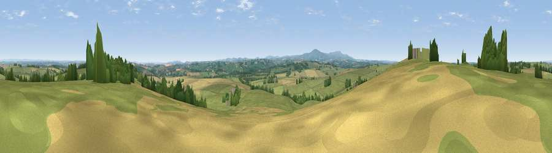

Viewpoint near North Tawton
#14048 in England · top 19% of its area beats it · near North Tawton · access?Where it is
The exact computed spot (SS 68925 02475). Click the marker for map links.
Public access: no public right of way or access land is recorded at this exact spot — it may be on private land. Computed from Natural England's CRoW access layer and OpenStreetMap rights of way — not the legal definitive map. Always verify locally.
The view, rendered

A 360° render of this exact spot computed from the terrain model, tree cover and land cover — summer colours, afternoon light, calibrated against photographs of famous viewpoints. Real trees, hedges and buildings will differ in detail.
The panorama
Grey silhouette: terrain skyline in each direction (720 bearings, Earth curvature and refraction included). Dashed green: skyline with trees (+15 m) and buildings (+8 m) as obstacles. Blue strip: how far the ground is visible on each bearing.
Where the view opens
Wedge length = distance to the farthest visible ground on that bearing (vegetation-aware). Rings at 10, 25 and 50 km.
What fills the view
71% grassland · 18% cropland · 10% woodland · 1% built-up
Angular shares of the visible panorama (visual magnitude), not map area. Landscape diversity 0.36 (0–1 Shannon).
Key numbers
More beautiful places nearby
The staircase of upgrades: each row has a higher view potential than everything closer. Driving times are estimates from straight-line distance, calibrated against real road routing — check an actual route before setting out.
| Place | Direction | Drive | Score |
|---|---|---|---|
| Viewpoint near North Tawton | W · 1 km | ~2 min | 59.6 |
| Serstone Hill | E · 4 km | ~10 min | 61.1 |
| Viewpoint near Bondleigh | NW · 5 km | ~11 min | 64.0 |
| Viewpoint near Whiddon Down | S · 10 km | ~19 min | 67.0 |
| Viewpoint near Whiddon Down | S · 10 km | ~19 min | 67.5 |
| Viewpoint near Sticklepath | SSW · 11 km | ~20 min | 73.5 |
| Viewpoint near South Zeal | SSW · 12 km | ~22 min | 75.0 |
| Viewpoint near Drewsteignton | SSE · 14 km | ~26 min | 75.1 |
50.80696, -3.86164 · source: screening · position refined by local search. Computed location — check access rights before visiting.